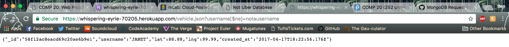
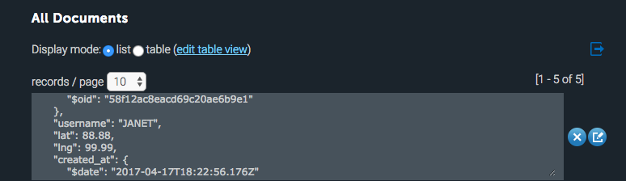
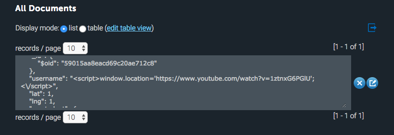

Security of Ben Skach's Assignments 2 and 3
Introduction
This is a web security and vulnerability check on Ben Skach's Assignments 2 and 3. I was instructed to find security and privacy flaws in his assignments using whitebox and blackbox testing methods.
Methodology
To test his app for security, I examined what the most common web security flaws are for web apps that use Node.js and MongoDB. I found that Cross-site scripting (XSS) and database injections are very common ways to hack web applications. In order to test if these attacks worked, I sent data to his web app hosted at https://whispering-eyrie-70205.herokuapp.com/ and examined what happened to the application after I launched my attacks. After investigating those two attacks, I examined the source code of his web app and found that he left the username and password of his database account in plain text.
Abstract of Findings
I was able to find both cross-site scripting and database injection vulnerabilites with his web application. Sending specific data to his /vehicle.json route caused the database to dump the first vehicle in the database onto the webpage instead of the one vehicle it was supposed to do. In addition, his /submit route was able to attacked using XSS. By sending in some Javascript code pretending to be a username, I was able to re-direct his webpage. In addition, in the source code of his web app, he left the username and password for the MongoDB in plain text.
Issues Found
- Database Injection
- Location: https://whispering-eyrie-70205.herokuapp.com/vehicle.json
- This is a high severity issue. I was able to inject some code into the database that returns all the information about the location of the first vehicle in the database without knowing the username of a vehicle, which greatly compromises the security of the first vehicle in the database
- By sending this url query "https://whispering-eyrie-70205.herokuapp.com/vehicle.json?username[$ne]=notausername", the first entry in the vehicles database is dumped. I found this issue by looking for NoSQL injections online and found an injection that was applicable to his database.


- This could be resolved by sanitizing the input before checking to see if the username is in the database. By removing special characters, the [$] would be removed, leaving just a regular username that would not be in the database.
- Cross-site Scripting
- This issue was found on the index page of the web app
- This is a high severity issue because any sort of malicious Javascript can be entered into the database and then run on the clients machine without their permission.
- This issue involves sending in Javascript as the username that gets stored in the database. When the index route of the web app tries to render the usernames, it runs the Javascript code in the clients web browser.
- By running the curl command "curl --data "username=<script>window.location='https://www.youtube.com/watch?v=1c06xOF4uQ8'</script>&lat=1&lng=1", I inserted Javascript code that redirects the current webpage to the Youtube video "Chickens of Fire". This Javascript code could replaced by any malicious Javascript code

- By sanitizing the user input and removing special characters, it is possible to strip out the greater than and less than tags, making it so that the Javascript does not run when rendered.
- Storing Username and Password in Plain-Text
- This issue was found in the source code of the web app
- This is a high severity issue because it gives access to the database to anyone with the source code.
- The problem with leaving the username and password in plaintext in the source code for the MongoDB is that anyone with access to the source code is able to then log in to the database and alter it anyway they see fit. This is just a bad programming practice.
- Remove the password and username from that mongo connection line. I am pretty sure the line is unnecessary and you can connect the database to localhost in the third option which would remove the password and username altogether.
Conclusion
In conclusion, both the database injections and XSS could be resolved by sanitizing the user input before inserting it into the database or making any database queries. In addition, removing the username and password from the source code file would prevent any malicious people from gaining direct access to the database.
References
- http://blog.websecurify.com/2014/08/hacking-nodejs-and-mongodb.html
- https://gist.github.com/mchow01/49f8979829f1c488d922
- https://tuftsdev.github.io/WebProgramming/notes/web_security.html